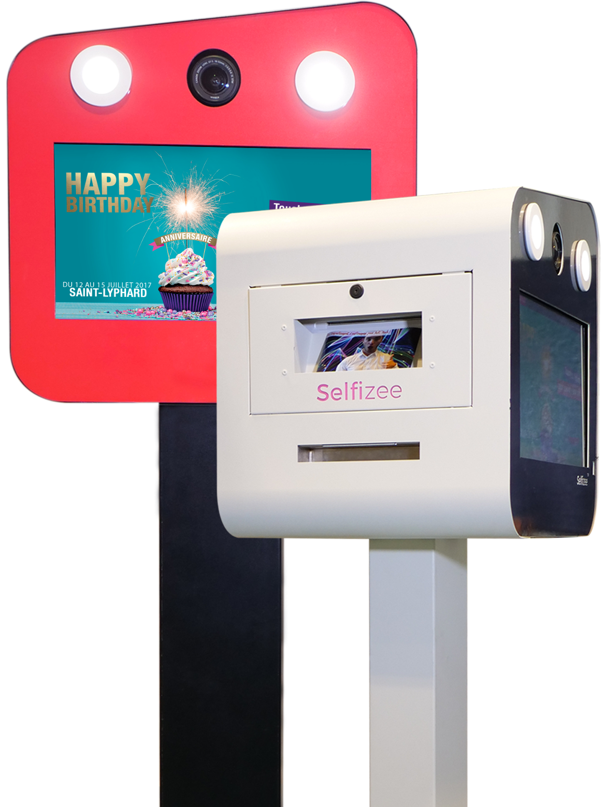
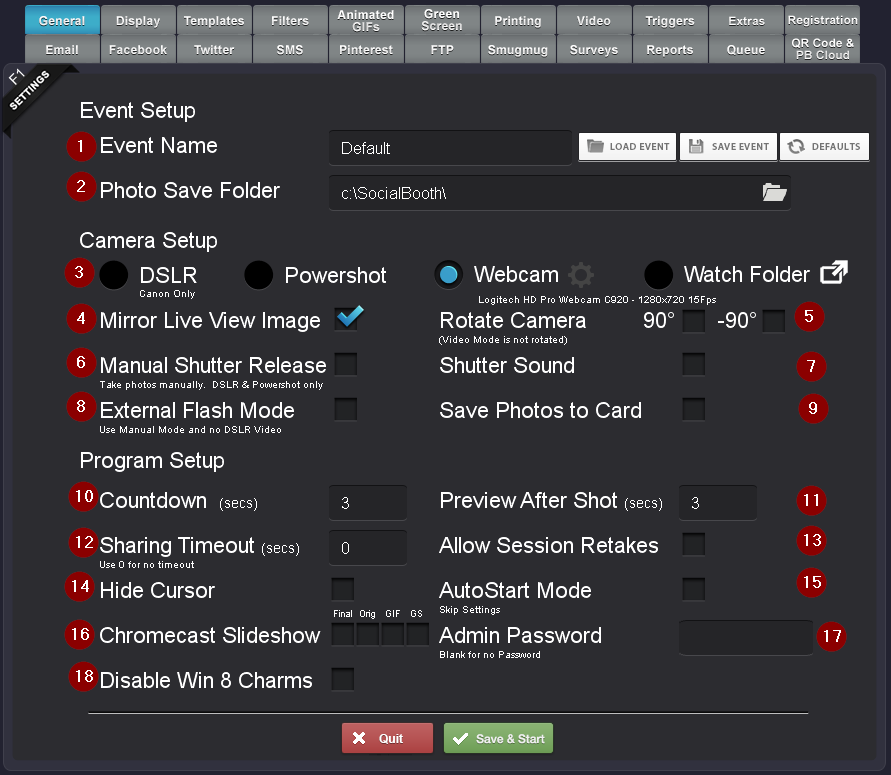

La borne photo Webqam
08 août 2018
Dans cet article je vais parler plus précisement d’une tâche que j’ai eu à réaliser vers la fin de mon stage chez Webqam.
L’entreprise avait acheté, avant mon arrivée, une borne photo de ce type
 ainsi que le logiciel photo
Social Booth. Mon chef de projet ainsi que toutes les équipes s’étaient déjà bien amusés avec toutes
les fonctionnalités qu’offrait un appareil et un logiciel de ce style.
Cependant, Webqam désirait pouvoir la louer à d’autres entreprises ou à des associations pour des évènements
ou autre. Et les options de Social Booth étaient assez variées, en anglais pour les non bilingues, et surtout
assez peu expliqués et dur à comprendre pour un novice. Mon objectif a été donc de découvrir le logiciel
et découvrir toutes les fonctionnalités qu’il pouvait offrir pour pouvoir par la suite réaliser une documentation
et ainsi expliquer à un client jusqu’où ils peuvent aller dans leurs projets photos.
Comme c’était un projet interne à Webqam, et que j’avais souvent d’autres obligations concernant des sites
directement liés à des clients, cette tâche de borne photo passée après tout. Cependant, j’ai bien pu découvrir
le logiciel Social Booth dans tous ses détails et ai pu réaliser une documentation en conséquence. J’ai donc
répertorié dans un Google Doc toutes les fonctionnalités disponibles dans Social Booth, ce qu’elles font
concrètement, quelles sont leurs limites, pourquoi peuvent être utiles …
La documentation officielle étant, dans un premier temps en anglais, et dans un second temps, peu utile
puisqu’elle ne donne pas beaucoup de détails sur les différentes options, j’ai dû expérimenter la plupart
des options moi-même avec la borne et le logiciel. C’était donc plutôt un challenge pour moi car je ne connaissais
rien de ce logiciel au tout début et le fait de ne pas avoir d’aide, soit des employés de Webqam qui n’y
connaissait pas plus que moi ou encore de la documentation.
J’ai rendu la documentation complète la dernière semaine et je pense être assez content du travail que j’ai
réalisé. Je n’avais jamais expérimenté de logiciel de borne photo avant et encore moins fait de « mode
d’emploi » comme celui que j’ai fait. J’en garde donc une expérience, et qui sait, peut-être que cela
pourra me servir dans de prochains projets.